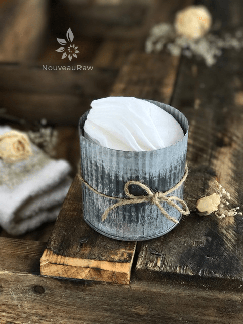

Purifying pH Balancing Facial Toner (DYI)

I am going to jump right into this one. This facial toner is part of my daily skin care regimen. And since I often get requests from people asking me what I use… well, I thought this was the best place to share.
Why Raw Apple Cider Vinegar?
Since Apple cider vinegar is naturally antibacterial, anti-fungal, and antiviral, it zaps acne-causing bacteria in the pores. This along with my health diet keeps my skin nice and clear of such things.
It also helps in maintaining the pH of the skin and tightens pores. When we wash our face, we disrupt our skin’s pH levels; this toner helps to rebalance your skin.
When creating a bottle of toner, the key is to use equal parts water and raw apple cider vinegar. So don’t feel locked into the measurements below.
In fact, I encourage you to make a small batch to see what you think. If your skin is super sensitive, try a ratio of 1:2 (1 part ACV and 2 parts water). Over time you can gently increase the ratio of ACV to water as your skin adjusts.
Only use Raw Apple Cider Vinegar
Use raw apple cider vinegar that has what they refer to as “The Mother.” It contains active, living beneficial bacteria and nutrients to boost your overall health and wellbeing. Avoid regular white or brown kinds of vinegar which have been put through rigorous distilling and processing. They are stripped of any health-promoting properties.
pH Skin Balancing
Although ACV is acidic, it actually helps to regulate the pH balance of the skin. By restoring your skin’s balance, the ACV helps your skin function optimally, warding off bacteria and shedding dead skin cells at the proper rate so your pores do not get clogged and your skin remains healthy.
It’s an excellent toner and can be used for all skin types. It’s also antibacterial and has anti-inflammatory properties. For oily and acne-prone skin, as I said above, ACV helps to treat acne and reduce redness. For dry and normal skin, ACV helps to exfoliate skin and reduce wrinkles. If you have really sensitive skin, just increase the ratio of water to ACV.

Rich in Alpha Hydroxy Acids
ACV is rich in Alpha Hydroxy acids which dissolve fatty deposits on the skin and dead skin cells which appear as little flakes or dry patches, revealing a fresher and healthier complexion once removed.
Spot Test
Always do a test spot on your skin to see how your skin responds. We all respond to foods differently, why would it be any different when it comes to putting “foods” on our skin which readily absorbs everything!
Will I Stink?!
Don’t worry; your face will not smell like vinegar for the rest of the day as the smell quickly fades seconds after application and is barely noticeable especially if you choose to infuse your toner with essential oils.
Boosting your toner
Orange essential oil (astringent, oil-reducing, stimulates collagen production), Lavender essential oil (antimicrobial, soothing, anti-inflammatory), Melaleuca (Tea Tree) essential oil (cleanses, purifies then skin to support a healthy complexion). Lemon juice (brightening, toning, helps reduce red marks). The list goes on!
Preparation:
- Sterilize the glass bottle by boiling it in water.
- Add the water, ACV, and essential oils to the bottle and cap.
- Be sure to shake the bottle of vinegar before adding it.
- Add the lid and gently shake back and forth, no need to be vigorous.
- Load a cotton ball/pad with the toner liquid and after washing your face, sweep the cotton all over, including the throat.
- Store in a cool, dry, dark place (No need to refrigerate). I make a new batch monthly.
Caution: Possible skin sensitivity. Always be sure to test on a small patch of skin first. Remember, this is my personal skin care regimen, and I am just sharing with you all that I have learned. Avoid contact with eyes, inner ears, and sensitive areas.
© AmieSue.com